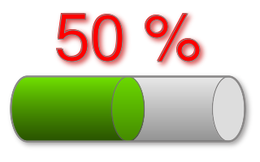

The Anatomy of the Command-line • Input Filename • Command-line Options • Output Filename
The ImageMagick command-line tools can be as simple as this:
magick image.jpg image.png Or it can be complex with a plethora of options, as in the following:
magick label.gif +matte \
\( +clone -shade 110x90 -normalize -negate +clone -compose Plus -composite \) \
\( -clone 0 -shade 110x50 -normalize -channel BG -fx 0 +channel -matte \) \
-delete 0 +swap -compose Multiply -composite button.gif");This example command is long enough that the command must be written across several lines, so we formatted it for clarity by inserting backslashes (\). The backslash is the Unix line-continuation character. In the Windows shell, use a carat character (^) for line-continuation. We use the Unix style on these web pages, as above. Sometimes, however, the lines are wrapped by your browser if the browser window is small enough, but the command-lines, shown in white, are still intended to be typed as one line. Line continuation characters need not be entered. The parentheses that are escaped above using the backslash are not escaped in Windows. There are some other differences between Windows and Unix (involving quotation marks, for instance), but we'll discuss some of those issues later, as they arise.
Without knowing much about the ImageMagick command-line, you can probably surmise that the first command above converts an image in the JPEG format to one in the PNG format. However, very few may realize the second, more complex command, gives a flat two-dimensional label a three-dimensional look with rich textures and simulated depth:
{kind=link}
{kind=link}
Here we show percent completion of a task as a shaded cylinder:
-

Given the complexity of the rendering, you might be surprised it is accomplished by a single command-line:
magick -size 320x90 canvas:none -stroke snow4 -size 1x90 -tile gradient:white-snow4 \
-draw 'roundrectangle 16, 5, 304, 85 20,40' +tile -fill snow \
-draw 'roundrectangle 264, 5, 304, 85 20,40' -tile gradient:chartreuse-green \
-draw 'roundrectangle 16, 5, 180, 85 20,40' -tile gradient:chartreuse1-chartreuse3 \
-draw 'roundrectangle 140, 5, 180, 85 20,40' +tile -fill none \
-draw 'roundrectangle 264, 5, 304, 85 20,40' -strokewidth 2 \
-draw 'roundrectangle 16, 5, 304, 85 20,40' \( +clone -background snow4 \
-shadow 80x3+3+3 \) +swap -background none -layers merge \( +size -font Helvetica \
-pointsize 90 -strokewidth 1 -fill red label:'50 %' -trim +repage \( +clone \
-background firebrick3 -shadow 80x3+3+3 \) +swap -background none -layers merge \) \
-insert 0 -gravity center -append -background white -gravity center -extent 320x200 \
cylinder_shaded.pngIn the next sections we dissect the anatomy of the ImageMagick command-line. Hopefully, after carefully reading and better understanding how the command-line works, you should be able to accomplish complex image-processing tasks without resorting to the sometimes daunting program interfaces.
See Examples of ImageMagick Usage for additional help when using ImageMagick from the command-line.
The Anatomy of the Command-line
The ImageMagick command-line consists of
- one or more required input filenames.
- zero, one, or more image settings.
- zero, one, or more image operators.
- zero, one, or more image sequence operators.
- zero, one, or more image stacks.
- zero or one output image filenames (required by convert, composite, montage, compare, import, conjure).
You can find a detailed explanation of each of the constituent parts of the command-line in the sections that follow.
Input Filename
ImageMagick extends the concept of an input filename to include:
- filename globbing
- an explicit image format
- using built-in images and patterns
- STDIN, STDOUT, and file descriptors
- selecting certain frames from an image
- selecting a region of an image
- forcing an inline image resize
- forcing an inline image crop
- using filename references
These extensions are explained in the next few paragraphs.
Filename Globbing
In Unix shells, certain characters such as the asterisk (*) and question mark (?) automagically cause lists of filenames to be generated based on pattern matches. This feature is known as globbing. ImageMagick supports filename globbing for systems, such as Windows, that does not natively support it. For example, suppose you want to convert 1.jpg, 2.jpg, 3.jpg, 4.jpg, and 5.jpg in your current directory to a GIF animation. You can conveniently refer to all of the JPEG files with this command:
magick *.jpg images.gifExplicit Image Format
Images are stored in a myriad of image formats including
the better known JPEG, PNG, TIFF and others. ImageMagick must know the format
of the image before it can be read and processed. Most formats have a
signature within the image that uniquely identifies the format. Failing
that, ImageMagick leverages the filename extension to determine the format.
For example, image.jpg or image.JPG tells ImageMagick
it is reading an image in the JPEG format.
In some cases the image may not contain a signature
and/or the filename does not identify the image format. In these cases an
explicit image format must be specified. For example, suppose our image
is named image and contains raw red, green, and blue intensity
values. ImageMagick has no way to automagically determine the image format
so we explicitly set one:
magick -size 640x480 -depth 8 rgb:image image.pngBuilt-in Images and Patterns
ImageMagick has a number of built-in images and patterns. To utilize the checkerboard pattern, for example, use:
magick -size 640x480 pattern:checkerboard checkerboard.pngSTDIN, STDOUT, and file descriptors
Unix and Windows permit the output of one command to be piped to the input of another. ImageMagick permits image data to be read and written from the standard streams STDIN (standard in) and STDOUT (standard out), respectively, using a pseudo-filename of -. In this example we pipe the output of
convert to the display program:
magick logo: gif:- | display gif:-The second explicit format "gif:" is optional in the preceding example. The GIF image format has a unique signature within the image so ImageMagick's display command can readily recognize the format as GIF. The convert program also accepts STDIN as input in this way:
magick rose: gif:- | magick - -resize "200%" bigrose.jpg'Other pipes can be accessed via their file descriptors (as of version 6.4.9-3). The file descriptors 0, 1, and 2 are reserved for the standard streams STDIN, STDOUT, and STDERR, respectively, but a pipe associated with a file descriptor number N>2 can be accessed using the pseudonym fd:N. (The pseudonyms fd:0 and fd:1 can be used for STDIN and STDOUT.) The next example shows how to append image data piped from files with descriptors 3 and 4 and direct the result to the file with descriptor number 5.
magick fd:3 fd:4 -append fd:5When needed, explicit image formats can be given as mentioned earlier, as in the following.
magick gif:fd:3 jpg:fd:4 -append tif:fd:5Selecting Frames
Some images formats contain more than one image frame. Perhaps you only want the first image, or the last, or some number of images in-between. You can specify which image frames to read by appending the image filename with the frame range enclosed in brackets. Here our image (an animated GIF) contains more than one frame but we only want the first:
magick 'images.gif[0]' image.pngUnix shells generally interpret brackets so we enclosed the filename in quotes above. In a Windows command shell the brackets are not interpreted but using quotes doesn't hurt. However, in most cases the roles of single-quotes and double-quotes are reversed with respect to Unix and Windows, so Windows users should usually try double-quotes where we display single-quotes, and vice versa.
You can read more than one image from a sequence with a frame range. For example, you can extract the first four frames of an image sequence:
magick 'images.gif[0-3]' images.mngFinally, you can read more than one image from a sequence, out-of-order. The next command gets the third image in the sequence, followed by the second, and then the fourth:
magick 'images.gif[3,2,4]' images.mngNotice that in the last two commands, a single image is written. The output in this case, where the image type is MNG, is a multi-frame file because the MNG format supports multiple frames. Had the output format been JPG, which only supports single frames, the output would have consisted of separate frames. More about that below, in the section about the Output Filename.
Selecting an Image Region
Raw images are a sequence of color intensities without additional meta information such as width, height, or image signature. With raw image formats, you must specify the image width and height but you can also specify a region of the image to read. In our example, the image is in the raw 8-bit RGB format and is 6000 pixels wide and 4000 pixels high. However, we only want a region of 600 by 400 near the center of the image:
magick -size 6000x4000 -depth 8 'rgb:image[600x400+1900+2900]' image.jpgYou can get the same results with the ‑extract option:
magick -size 6000x4000 -depth 8 -extract 600x400+1900+2900 rgb:image image.jpgInline Image Resize
It is sometimes convenient to resize an image as they are read. Suppose you have hundreds of large JPEG images you want to convert to a sequence of PNG thumbails:
magick '*.jpg' -resize 120x120 thumbnail%03d.pngHere all the images are read and subsequently resized. It is faster and less resource intensive to resize each image it is read:
magick '*.jpg[120x120]' thumbnail%03d.pngInline Image Crop
It is sometimes convenient to crop an image as they are read. Suppose you have hundreds of large JPEG images you want to convert to a sequence of PNG thumbails:
magick '*.jpg' -crop 120x120+10+5 thumbnail%03d.pngHere all the images are read and subsequently cropped. It is faster and less resource-intensive to crop each image as it is read:
magick '*.jpg[120x120+10+5]' thumbnail%03d.pngFilename References
There are two methods to use a filename to reference other image filenames.
The first is with '@' which reads image filenames separated by white space from the specified file. Assume the file myimages.txt consists of a list of filenames, like so:
frame001.jpg frame002.jpg frame003.jpg
We then expect this command:
magick @myimages.txt mymovie.gifto read the images frame001.jpg, frame002.jpg, and frame003.jpg and convert them to a GIF image sequence.
If the image path includes one or more spaces, enclose the path in quotes:
'my title.jpg'
Some ImageMagick command-line options may exceed the capabilities of
your command-line processor. Windows, for example, limits command-lines
to 8192 characters. If, for example, you have a draw option with polygon
points that exceed the command-line length limit, put the draw option instead
in a file and reference the file with
the @ (e.g. @mypoly.txt).
Another method of referring to other image files is by
embedding a formatting character in the filename with a scene range. Consider
the filename image-%d.jpg[1-5]. The command
magick image-%d.jpg[1-5]causes ImageMagick to attempt to read images with these filenames:
image-1.jpg image-2.jpg image-3.jpg image-4.jpg image-5.jpg
Stream Buffering
By default, the input stream is buffered. To ensure information on the source file or terminal is read as soon as its available, set the buffer size to 0:
magick logo: gif:- | display -define stream:buffer-size=0 gif:-Command-line Options
You can direct the behavior of ImageMagick utilities with these command-line options. The behavior of an option falls into one of these categories:
- Image Setting
- Image Operator
- Image Channel Operator
- Image Sequence Operator
- Image Geometry
- Image Stack
Image Setting
An image setting persists as it appears on the command-line and may affect subsequent processing such as reading an image, an image operator, or when writing an image as appropriate. An image setting stays in effect until it is reset or the command-line terminates. The image settings include:
-
‑adjoin • ‑affine • ‑alpha • ‑antialias • ‑authenticate • ‑background • ‑bias • ‑black‑point‑compensation • ‑blue‑primary • ‑bordercolor • ‑caption • ‑channel • ‑comment • ‑compress • ‑debug • ‑define • ‑delay • ‑density • ‑depth • ‑direction • ‑display • ‑dispose • ‑dither • ‑encoding • ‑endian • ‑extract • ‑family • ‑fill • ‑filter • ‑font • ‑format • ‑fuzz • ‑geometry • ‑gravity • ‑green‑primary • ‑interlace • ‑intent • ‑interpolate • ‑label • ‑limit • ‑linewidth • ‑log • ‑loop • ‑mattecolor • ‑monitor • ‑orient • ‑page • ‑pointsize • ‑preview • ‑quality • ‑quiet • ‑read‑mask • ‑red‑primary • ‑region • ‑render • ‑repage • ‑sampling‑factor • ‑scene • ‑seed • ‑size • ‑stretch • ‑stroke • ‑strokewidth • ‑style • ‑texture • ‑tile • ‑transparent‑color • ‑treedepth • ‑type • ‑undercolor • ‑units • ‑verbose • ‑virtual‑pixel • ‑weight • ‑write‑mask
In this example, -channel applies to each of the images, since, as we mentioned, settings persist:
magick -channel RGB wand.png wizard.png images.pngImage Operator
An image operator differs from a setting in that it affects the image immediately as it appears on the command-line. An operator is any command-line option not listed as a image setting or image sequence operator. Unlike an image setting, which persists until the command-line terminates, an operator is applied to an image and forgotten. The image operators include:
-
‑annotate • ‑black‑threshold • ‑blur • ‑border • ‑charcoal • ‑chop • ‑clip • ‑clip‑path • ‑clip‑mask • ‑colors • ‑colorize • ‑colorspace • ‑compose • ‑contrast • ‑convolve • ‑crop • ‑cycle • ‑despeckle • ‑draw • ‑edge • ‑emboss • ‑enhance • ‑equalize • ‑evaluate • ‑extent • ‑flip • ‑flop • ‑floodfill • ‑frame • ‑gamma • ‑gaussian‑blur • ‑grayscale • ‑implode • ‑lat • ‑level • ‑map • ‑median • ‑modulate • ‑monochrome • ‑negate • ‑noise • ‑normalize • ‑opaque • ‑ordered‑dither • ‑paint • ‑posterize • ‑raise • ‑profile • ‑radial‑blur • ‑raise • ‑random‑threshold • ‑resample • ‑resize • ‑roll • ‑rotate • ‑sample • ‑scale • ‑sepia‑tone • ‑segment • ‑shade • ‑shadow • ‑sharpen • ‑shave • ‑shear • ‑sigmoidal‑contrast • ‑solarize • ‑splice • ‑spread • ‑strip • ‑swirl • ‑threshold • ‑transparent • ‑thumbnail • ‑tint • ‑transform • ‑trim • ‑unsharp • ‑version • ‑wave • ‑white‑point • ‑white‑threshold
In this example, -negate negates the wand image but not the wizard:
magick wand.png -negate wizard.png images.pngImage Channel Operator
Operate directly on image channels:
Image Sequence Operator
An image sequence operator differs from a setting in that it affects an image sequence immediately as it appears on the command-line. Choose from these image sequence operators:
-
‑append • ‑affinity • ‑average • ‑clut • ‑coalesce • ‑combine • ‑compare • ‑complex • ‑composite • ‑copy • ‑crop • ‑debug • ‑deconstruct • ‑delete • ‑evaluate‑sequence • ‑fft • ‑flatten • ‑fx • ‑hald‑clut • ‑ift • ‑identify • ‑insert • ‑layers • ‑limit • ‑map • ‑maximum • ‑minimum • ‑morph • ‑mosaic • ‑optimize • ‑print • ‑process • ‑quiet • ‑swap • ‑write
In this example, -append appends three images into one:
magick mikayla.png picnic.png beach.png -append vacation.pngImage Geometry
Many command-line options take a geometry argument to specify such things as the desired width and height of an image and other dimensional quantities. Because users want so many variations on the resulting dimensions, sizes, and positions of images (and because ImageMagick wants to provide them), the geometry argument can take many forms. We describe many of these in this section.
The image options and settings that take some form of a geometry argument include the following. Keep in mind that some of these parse their arguments in slightly different ways. See the documentation for the individual option or setting for more specifics.
-
‑adaptive‑resize • ‑border • ‑borderwidth • ‑chop • ‑crop • ‑density • ‑extent • ‑extract • ‑frame • ‑geometry • ‑iconGeometry • ‑liquid‑rescale • ‑page • ‑region • ‑repage • ‑resize • ‑sample • ‑scale • ‑shave • ‑splice • ‑thumbnail • ‑window
The geometry argument might take any of the forms listed in the table below. These will described in more detail in the subsections following the table. The usual form is size[offset], meaning size is required and offset is optional. Occasionally, [size]offset is possible. In no cases are spaces permitted within the geometry argument.
| size | General description (actual behavior can vary for different options and settings) |
|---|---|
| scale% | Height and width both scaled by specified percentage. |
| scale-x%xscale-y% | Height and width individually scaled by specified percentages. (Only one % symbol needed.) |
| width | Width given, height automagically selected to preserve aspect ratio. |
| xheight | Height given, width automagically selected to preserve aspect ratio. |
| widthxheight | Maximum values of height and width given, aspect ratio preserved. |
| widthxheight^ | Minimum values of width and height given, aspect ratio preserved. |
| widthxheight! | Width and height emphatically given, original aspect ratio ignored. |
| widthxheight> | Shrinks an image with dimension(s) larger than the corresponding width and/or height argument(s). |
| widthxheight< | Enlarges an image with dimension(s) smaller than the corresponding width and/or height argument(s). |
| area@ | Resize image to have specified area in pixels. Aspect ratio is preserved. |
| {size}{offset} | Specifying the offset (default is +0+0). Below, {size} refers to any of the forms above. |
| {size}{+-}x{+-}y | Horizontal and vertical offsets x and y, specified in pixels. Signs are required for both. Offsets are affected by ‑gravity setting. Offsets are not affected by % or other size operators. |
Basic adjustments to width and height; the operators %, ^, and !
Here, just below, are a few simple examples of geometry, showing how it might be used as an argument to the ‑resize option. We'll use the internal image logo: for our input image.
This fine image is 640 pixels wide and 480 pixels high. We say its dimensions are 640x480. When we give dimensions of an image, the width (the horizontal dimension) always precedes the height (the vertical dimension). This will be true when we speak of coordinates or offsets into an image, which will always be x–value followed by y. Just think of your high school algebra classes and the xy–plane. (Well, almost: our y–axis will always go downward!)
{kind=link}
magick logo: -resize '200%' bigWiz.png
magick logo: -resize '200x50%' longShortWiz.png
magick logo: -resize '100x200' notThinWiz.png
magick logo: -resize '100x200^' biggerNotThinWiz.png
magick logo: -resize '100x200!' dochThinWiz.pngThe first of the four commands is simple—it stretches both the width and height of the input image by 200% in each direction; it magnifies the whole thing by a factor of two. The second command specifies different percentages for each direction, stretching the width to 200% and squashing the height to 50%. The resulting image (in this example) has dimensions 1280x240. Notice that the percent symbol needn't be repeated; the following are equivalent: 200x50%, 200%x50, 200%x50%.
By default, the width and height given in a geometry argument are maximum values unless a percentage is specified. That is, the image is expanded or contracted to fit the specified width and height value while maintaining the aspect ratio (the ratio of its height to its width) of the image. For instance, the third command above "tries" to set the dimensions to 100x200. Imagine gradually shrinking the original image (which is 640x480), keeping is aspect ratio constant, until it just fits into a 100x200 rectangle. Since the image is longer than it is tall, it will fit when its width shrinks to 100 pixels. To preserve the aspect ratio, the height will therefore have to be (480/640)×100 pixels=75 pixels, so the final dimensions will be 100x75.
Notice that in the previous example, at least one of the specified dimensions will be attained (in this case, the width, 100 pixels). The resulting image fits snugly within the original. One can do just the opposite of this by invoking the ^ operator, as in the fourth example above. In that case, when 100x200^ is given as the argument, again at least one of the dimensions will be attained, but in this case the resulting image can snugly contain the original. Here the geometry argument gives minimum values. In our example, the height will become 200 and the width will be scaled to preserve the aspect ratio, becoming (640/480)×200 pixels=267 pixels. With the ^ operator, one of those dimensions will match the requested size, but the image will likely overflow the dimensions requested to preserve its aspect ratio. (The ^ feature is new as of IM 6.3.8-2.)
We see that ImageMagick is very good about preserving aspect ratios of images, to prevent distortion of your favorite photos and images. But you might really want the dimensions to be 100x200, thereby stretching the image. In this case just tell ImageMagick you really mean it (!) by appending an exclamation operator to the geometry. This will force the image size to exactly what you specify. So, for example, if you specify 100x200! the dimensions will become exactly 100x200 (giving a small, vertically elongated wizard).
Bounding the width, height, and area; the operators >, <, and @
Here are a few more examples:
magick logo: -resize '100' wiz1.png
magick logo: -resize 'x200' wiz2.png
magick logo: -resize '100x200>' wiz3.png
magick logo: -resize '100x200<' wiz4.pngIf only one dimension is given it is taken to be the width. When only the width is specified, as in the first example above, the width is accepted as given and the height is chosen to maintain the aspect ratio of the input image. Similarly, if only the height is specified, as in the second example above, the height is accepted and the width is chosen to maintain the aspect ratio.
Use > to shrink an image only if its dimension(s) are larger than the corresponding width and/or height arguments. Use < to enlarge an image only if its dimension(s) are smaller than the corresponding width and/or height arguments. In either case, if a change is made, the result is as if the > or < operator was not present. So, in the third example above, we specified 100x200> and the original image size is 640x480, so the image size is reduced as if we had specified 100x200. However, in the fourth example above, there will be no change to its size.
Finally, use @ to specify the maximum area in pixels of an image, again while attempting to preserve aspect ratio. (Pixels take only integer values, so some approximation is always at work.) In the following example, an area of 10000 pixels is requested. The resulting file has dimensions 115x86, which has 9890 pixels.
magick logo: -resize '10000@' wiz10000.pngIn all the examples above and below, we have enclosed the geometry arguments within quotation marks. Doing so is optional in many cases, but not always. We must enclose the geometry specifications in quotation marks when using < or > to prevent these characters from being interpreted by the shell as file redirection. On Windows systems, the carat ^ needs to be within quotes, else it is ignored. To be safe, one should probably maintain a habit of enclosing all geometry arguments in quotes, as we have here.
Offsets in geometry
Here are some examples to illustrate the use of offsets in geometry arguments. One typical use of offsets is in conjunction with the
‑region option. This option allows many other options to modify the pixels within a specified rectangular subregion of an image. As such, it needs to be given the width and height of that region, and also an offset into the image, which is a pair of coordinates that indicate the location of the region within the larger image. Below, in the first example, we specify a region of size 100x200 to be located at the xy–coordinates x=10, y=20. Let's use the usual algebraic notation (x,y)=(10,20), for convenience.
magick logo: -region '100x200+10+20' -negate wizNeg1.png
magick logo: -region '100x200-10+20' -negate wizNeg2.png
magick logo: -gravity center -region '100x200-10+20' -negate wizNeg3.pngNote that offsets always require +/− signs. The offset is not actually a true location within the image; its coordinates must be added to some other location. Let's refer to that as the current location. In the first two examples above, though, that location is the upper-left hand corner of the image, which has coordinates (0,0). (That is the default situation when there are no other directives given to change it.) The first example above puts the 100x200 rectangle's own upper-left corner at (10,20).
A negative offset can make sense in many cases. In the second example above, the offset is (-10,20), specified by -10+20. In that case, only the portion of the (virtual) rectangle obtained that lies within the image can be negated; here it is equivalent to specifying the geometry as 90x200+0+20.
In the third example above, the ‑gravity setting precedes the others and sets the current location within the image at the very center of the image. In this case that is at pixel (320,240), since the size of the image is 640x480. This means that the offsets apply to that location, which thereby gets moved, in this case, to (320-10,240+20)=(310,260). But the 100x200 region itself is affected by the ‑gravity setting, so instead of affecting its upper-left corner, the region's own center (at (+50,+100) within it) is determined. Therefore the center of the 100x200 rectangle is moved to (310,260). The negated rectangle's upper-left corner is now at (310-50,260-100)=(260,160).
Image Stack
In school, your teacher probably permitted you to work on problems on a scrap of paper and then copy the results to your test paper. An image stack is similar. It permits you to work on an image or image sequence in isolation and subsequently introduce the results back into the command-line. The image stack is delineated with parenthesis. Image operators only affect images in the current stack. For example, we can limit the image rotation to just the wizard image like this:
magick wand.gif \( wizard.gif -rotate 30 \) +append images.gifNotice again that the parentheses are escaped by preceding them with backslashes. This is required under Unix, where parentheses are special shell characters. The backslash tells the shell not to interpret these characters, but to pass them directly to the command being executed. Do not escape the parentheses under Windows. Each parenthesis (or escaped parenthesis) must have spaces on either side, as in the example shown above.
In addition to the image operators already discussed, the following image operators are most useful when processing images in an image stack:
The arguments to these operators are indexes into the image sequence by number, starting with zero, for the first image, and so on. However if you give a negative index, the images are indexed from the end (last image added). That is, an index of -1 is the last image in the current image sequence, -2 gives the second-to-last, and so on.
Output Filename
ImageMagick extends the concept of an output filename to include:
- an explicit image format
- write to standard out
- filename references
Each of these extensions are explained in the next few paragraphs.
Explicit Image Format
Images can be stored in a mryiad of image formats including the better known JPEG, PNG, TIFF and others. ImageMagick must know the desired format of the image before it is written. ImageMagick leverages the filename extension to determine the format. For example, image.jpg tells ImageMagick to write the image in the JPEG format. In some cases the filename does not identify the image format. In these cases, the image is written in the format it was originally read unless an explicit image format is specified. For example, suppose we want to write our image to a filename of image in the raw red, green, and blue intensity format:
magick image.jpg rgb:imageStandard Out
Unix permits the output of one command to be piped to another. ImageMagick permits piping one command to another with a filename of -. In this example we pipe the output of convert to the display program:
magick logo: gif:- | display gif:-Here the explicit format is optional. The GIF image format has a signature that uniquely identifies it so ImageMagick can readily recognize the format as GIF.
Filename References
Optionally, use an embedded formatting character to write a sequential image list. Suppose our output filename is image-%d.jpg and our image list includes 3 images. You can expect these images files to be written:
image-0.jpg image-1.jpg image-2.jpg
Or retrieve image properties to modify the image filename. For example, the command
magick rose: -set filename:area '%wx%h' 'rose-%[filename:area].png'writes an image with this filename:
rose-70x46.png
Finally to convert multiple JPEG images to individual PDF pages, use:
magick *.jpg +adjoin page-%d.pdfStream Buffering
By default, the output stream is buffered. To ensure information appears on the destination file or terminal as soon as written, set the buffer size to 0:
magick -define stream:buffer-size=0 logo: gif:- | display gif:-